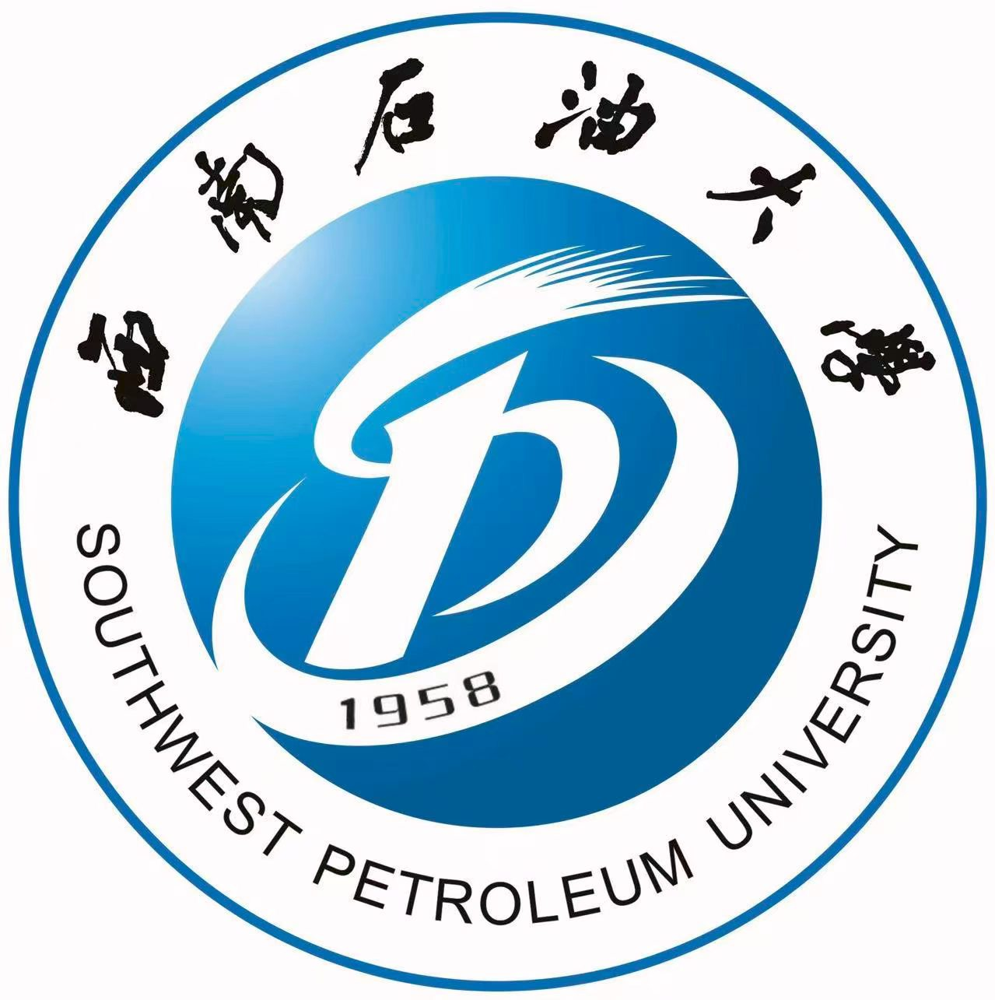
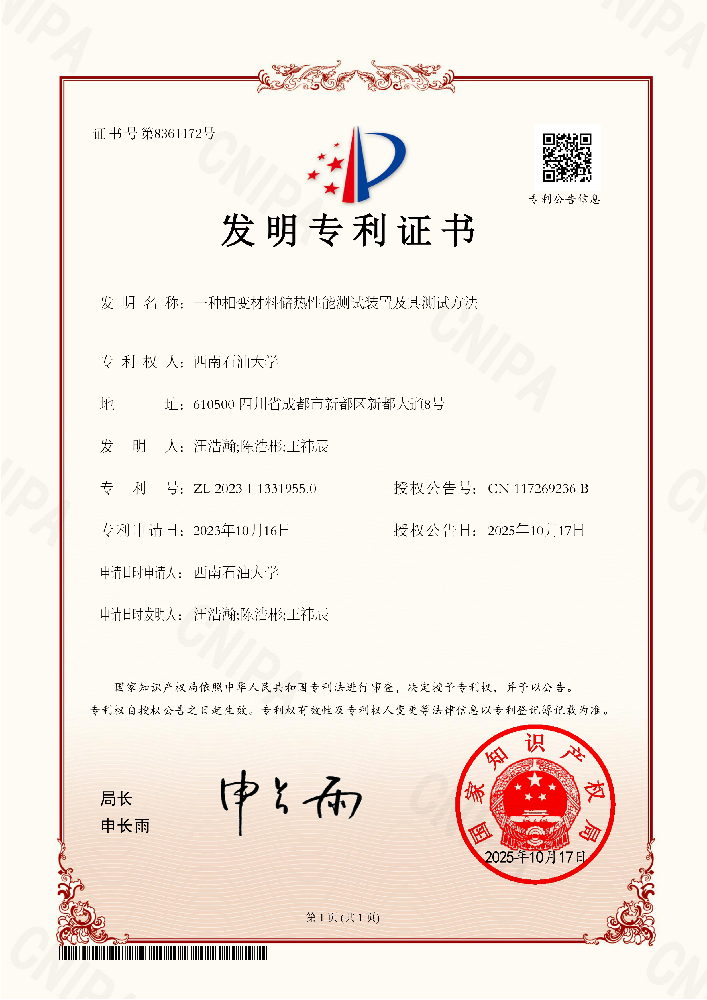
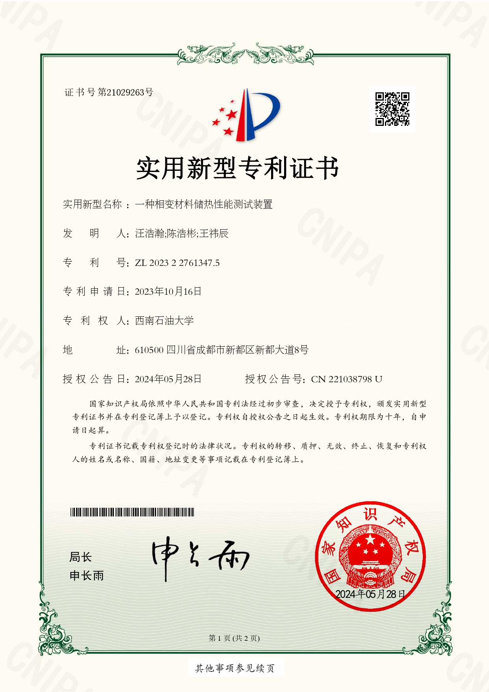
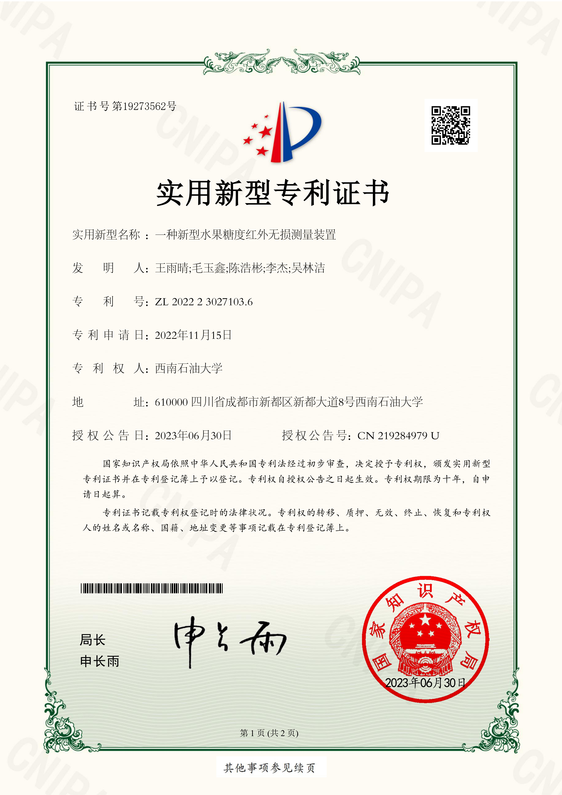
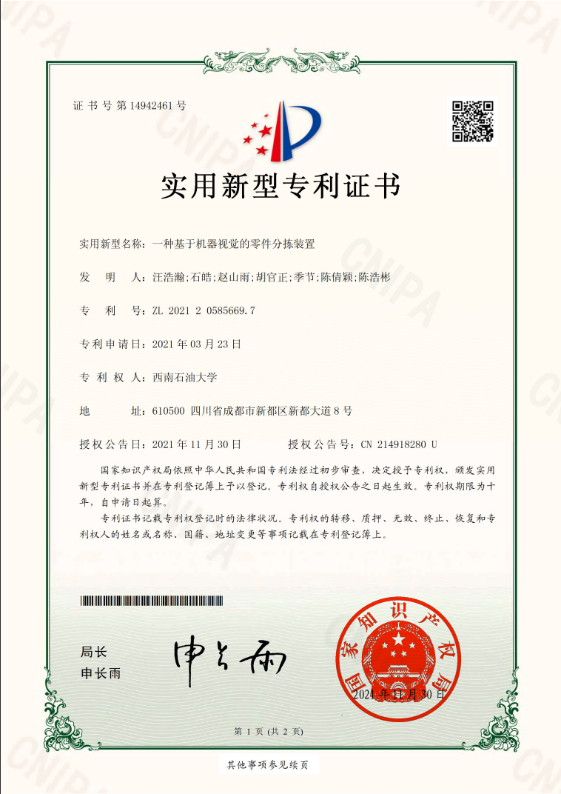

ROBOTICS · ASSISTIVE TECHNOLOGY · BRAIN–COMPUTER INTERFACES
Hi, I'm Haobin Chen.
I am a master's student in Mechanical Engineering at South China University of Technology. My work spans assistive robotics, multimodal brain–computer interfaces, musculoskeletal control, and the translation of research prototypes into real-world products.

M.S. Student · SCUT
Research Focus
Assistive robotics & multimodal BCI
Current Location
Guangzhou, China
01 / ABOUT
About Me
I am currently pursuing a master's degree in Mechanical Engineering at South China University of Technology. My research experience bridges mechanical design, intelligent control, rehabilitation robotics, and multimodal physiological sensing.
I have contributed to projects ranging from robot mechanism and control system design to EEG–fNIRS systems and hip-assist exoskeletons. I am particularly interested in translating research ideas into functional robotic systems and systematically investigating relevant research questions through mechanism design, control method development, prototyping, and experimental validation.
- Current Program
- M.S. in Mechanical Engineering
- Affiliation
- South China University of Technology
- Research Areas
- Assistive Robotics · BCI · Intelligent Control
- Laboratory
- B338, Shien-Ming Wu School of Intelligent Engineering
02 / EDUCATION
Education
My academic training in mechanical design, manufacturing, automation, and mechanical engineering.

SEP 2024 — JUN 2027 (EXPECTED)
South China University of Technology
Master's Student in Mechanical Engineering
Recommended for admission(Exempt from National Postgraduate Entrance Examination).
GPA: 85.6/100
Guangzhou, China

SEP 2020 — JUN 2024
Southwest Petroleum University
B.Eng. in Mechanical Design, Manufacturing and Automation
Academic foundation in mechanical systems, manufacturing, automation, and robotics.
GPA: 88.7/100 · Overall Ranking: 2/94
Chengdu, China
03 / RESEARCH EXPERIENCE
Research Experience
Selected projects in wearable robotics, multimodal brain–computer interfaces, cooperative manipulation, thermal-energy storage, and non-destructive sensing.
JUL 2025 — PRESENT
Adaptive Hip Exoskeleton System for Freezing-of-Gait in Parkinson’s Disease
Developing a wearable hip exoskeleton and intelligent gait-monitoring system for detecting and mitigating freezing-of-gait in patients with Parkinson’s disease.
SEP 2024 — JUN 2025
EEG–fNIRS Multimodal Brain-Controlled Rehabilitation Robot
Developing a compact multimodal EEG–fNIRS brain–computer interface for reliable neural signal acquisition and brain-controlled rehabilitation robotics.
SEP 2023 — DEC 2024
Dual-Manipulator Cooperative System for Drilling Derrick Pin Assembly and Disassembly
Developing a multi-robot cooperative system for automated assembly and disassembly of high-load derrick pins in constrained industrial environments.
APR 2023 — JUN 2024
Phase-Change Material Property Testing Instrument Design
Developing a low-cost, high-throughput instrument for experimentally evaluating the thermal storage performance of phase-change materials.
JUN 2022 — OCT 2023
Apple Sugar Content Distribution Monitoring and Management System
Developing a non-destructive NIR-based sensing and monitoring system for rapid assessment and management of apple sugar content.
04 / SELECTED PROJECTS
Selected Projects
Two systems advanced through complete development pipelines and achieved successful commercialization.
PROJECT 01 · MULTIMODAL BCI
EEG–fNIRS Multimodal Brain–Computer Interface System
Contributed to hardware development and testing, including circuit-board design, data acquisition, and signal-quality evaluation.
- Special Prize, 18th “Challenge Cup” Guangdong Provincial Competition
- National Gold Award, China International College Students' Innovation Competition (2025)
- Commercialized and granted a medical-device registration certificate
PROJECT 02 · ASSISTIVE ROBOTICS
Hip-Assist Exoskeleton
Led the overall research, development, and project coordination of a hip-assist exoskeleton through the advisor's company platform.
- Managed the full pipeline from design and manufacturing to iterative product refinement
- Coordinated small-batch production, testing, and certification
- Advanced the product to mass production and commercialization
05 / PUBLICATIONS
Publications
Research on musculoskeletal locomotion, reinforcement-learning-based assistance, and freezing-of-gait detection.
-
01Accepted
PMG-RL for Stable Multi-Speed Walking Control of a Human Musculoskeletal Model
2026 IEEE 3rd International Conference on Energy and Electrical Engineering
-
02Under Review
A Normal-Gait Reconstruction Residual Framework for Freezing-of-Gait Detection in Parkinson's Disease
Expert Systems with Applications
-
03Under Review
FrontalSleepNet: Multiscale Context-Aware Sleep Staging From Information-Limited Frontal EEG
IEEE Journal of Biomedical and Health Informatics
-
04In Preparation
CPG-Guided Reinforcement Learning for Hip Assistance Strategy in a Musculoskeletal Environment
IEEE Robotics and Automation Letters
06 / PATENTS
Patents
Granted intellectual-property outcomes in machine vision, nondestructive measurement, and thermal-energy storage.

View Certificate ↗A Device and Method for Testing the Thermal-Storage Performance of Phase-Change Materials
Patent No. ZL 2023 1 1331955.0
Southwest Petroleum University · Co-inventor

View Certificate ↗A Phase-Change Material Thermal Storage Performance Testing Device
Patent No. ZL 2023 2 2761347.5
Southwest Petroleum University · Co-inventor

View Certificate ↗A Novel Near-Infrared Nondestructive Fruit Sugar-Content Measurement Device
Patent No. ZL 2022 2 3027103.6
Southwest Petroleum University · Co-inventor

View Certificate ↗A Machine-Vision-Based Component Sorting Device
Patent No. ZL 2021 2 0585669.7
Southwest Petroleum University · Co-inventor
07 / AWARDS & HONORS
Awards & Honors
Hover over or select each card to view its supporting certificate.

2024 · 2025 · 2026
Graduate Scholarship
South China University of Technology.
View details ↻
2025
National Gold Award
China International College Students' Innovation Competition · Intelligent Robotic System with a Brain–Computer Interface.
View certificate ↻

2024
Undergraduate Graduation Design (Thesis) Innovation Award
Southwest Petroleum University · Micro Multi-DOF Serial Robot Design and Motion Control.
View certificate ↻2023
National First Prize
China College Students' Intelligent Robot Creative Competition.
View certificate ↻2023
National First Prize · 6th Nationwide
16th “Higher Education Cup” National Competition of Advanced Graphics Skills and Product Information Modeling Innovation, Additive Manufacturing Track.
View certificate ↻2022 · 2023
First-Class Scholarship
Southwest Petroleum University · Top 3% in the major.
View certificates ↻2022
Wewodon Scholarship
Southwest Petroleum University · Top 1% in the major.
View certificate ↻08 / BEYOND RESEARCH
Beyond Research
Outdoor Interests
CyclingMiddle- & Long-Distance RunningSwimmingHiking
实验室
吴贤铭智能工程学院B338
09 / CONTACT
Let's Connect.
Feel free to contact me regarding research collaboration and academic exchange.